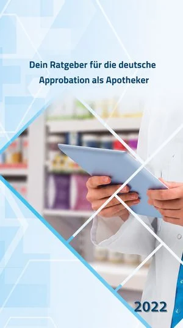

لماذا Pharma-Coach؟
يعيش الصيدلاني في ألمانيا تفاوتاً يومياً: الدراسة متينة، لكن الانتقال إلى ممارسة الاستشارة عند طاولة البيع نادراً ما يكون مُعدّاً بشكل منظَّم. وهذا النقص يمسّ بوجه خاص الزملاء القادمين من الخارج، الذين يقطعون طريق المعادلة ثم يجدون أنفسهم في يوميات الصيدلية دون أن يكونوا قد تلقّوا ملاحظات عملية.
Pharma-Coach هو محاولة لمعالجة هذه المشكلة بوسائل حديثة: بشكل منظَّم وعملي وسهل الوصول. ليس بديلاً عن الدراسة، بل هو ما ينقص بعدها.
المسيرة المهنية
إتمام دراسة الصيدلة، أساساً للمسيرة المهنية.
سبع سنوات في التسويق الدوائي لدى عدد من شركات تصنيع الأدوية. وبالتوازي، دراسة MBA لمدة سنتين، وبرامج تدريبية دولية في التنظيم والتسويق والتواصل المؤسسي، منها دورات في أكاديميات طلال أبو غزالة ومركز NYIT للتدريب.
الوصول إلى ألمانيا وبدء إجراءات المعادلة (Anerkennungsverfahren)، ومنذ ذلك الحين يعمل بالكامل في الصيدلية.
عضو مؤسّس وعضو مجلس إدارة في جمعية الأطباء والصيادلة السوريين في ألمانيا (SyGAAD). نظّم العديد من الفعاليات التعليمية للزملاء من أصول مهاجرة، منها ورشة عمل بأكثر من 180 مشاركاً. أدار عدة ندوات عبر الإنترنت، وحلّ ضيفاً على عدد من البودكاستات الصيدلانية التخصصية.
إدارة فرع Engel-Apotheke في Harsewinkel، وبناء Pharma-Coach: منصة التعلّم الرقمية للكفاءة الاستشارية في الصيدلية.
قناة YouTube
إتمام مسار المعادلة والحصول على الترخيص الألماني، ومنذ ذلك الحين العمل المتواصل في الصيدلية.
الكتاب
